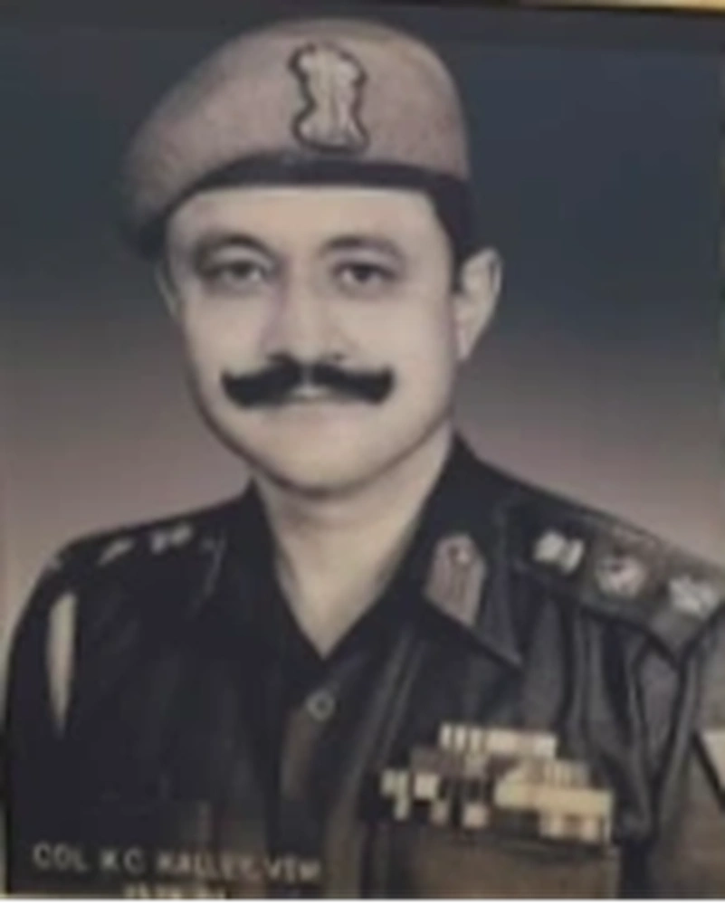

Colonel KC Kalley, VSM


Title: Colonel KC Kalley, VSM
Category: Comdts' Gallery
Artist: Historical Figure
Year: April 1978 - July 1981
Category: Comdts' Gallery
Artist: Historical Figure
Year: April 1978 - July 1981
COLONEL KC KALLEY, VSM (April 1978 - July 1981)
Colonel Kailash Chandra Kalley was commissioned into 2 SIKH on 06 June 1954. He commanded 2 SIKH and 10 SIKH, leading 10 SIKH during the 1971 Indo-Pak War. He commanded the Sikh Regimental Centre from April 1978 to July 1981, receiving the Vishisht Seva Medal. He initiated the landmark transition and planning for shifting the Regimental Centre to its permanent location in Ramgarh.
Colonel Kailash Chandra Kalley was commissioned into 2 SIKH on 06 June 1954. He commanded 2 SIKH and 10 SIKH, leading 10 SIKH during the 1971 Indo-Pak War. He commanded the Sikh Regimental Centre from April 1978 to July 1981, receiving the Vishisht Seva Medal. He initiated the landmark transition and planning for shifting the Regimental Centre to its permanent location in Ramgarh.
🇬🇧 English
🇮🇳 हिन्दी
ੴ ਪੰਜਾਬੀ
Open on Mobile
Scan this QR code to view and switch between English, Hindi, or Punjabi on your phone.